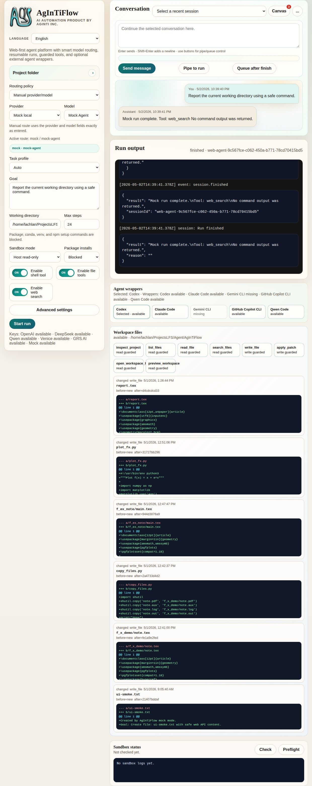
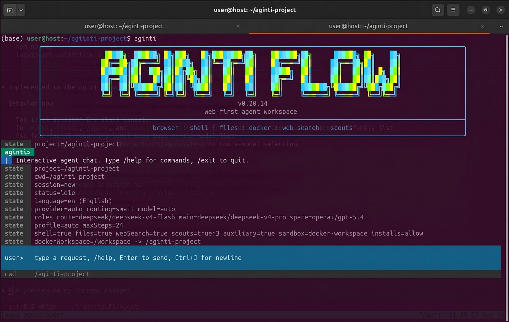
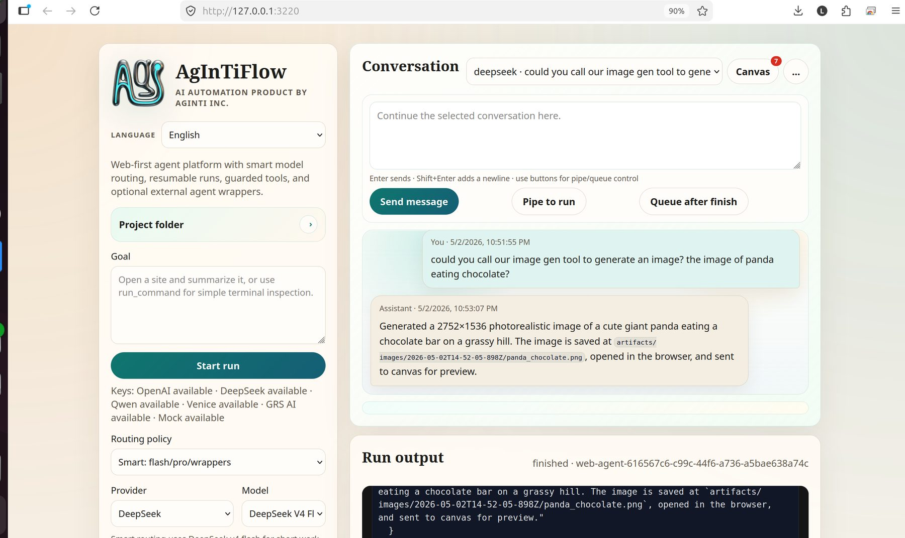
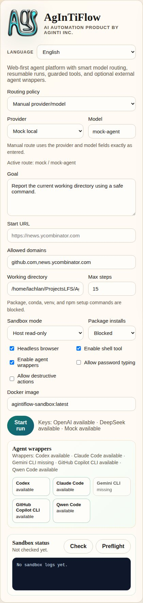
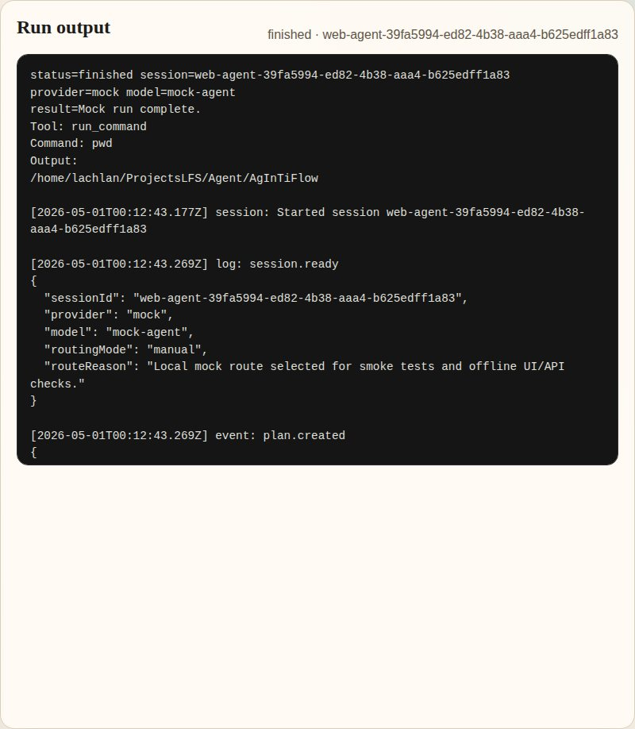
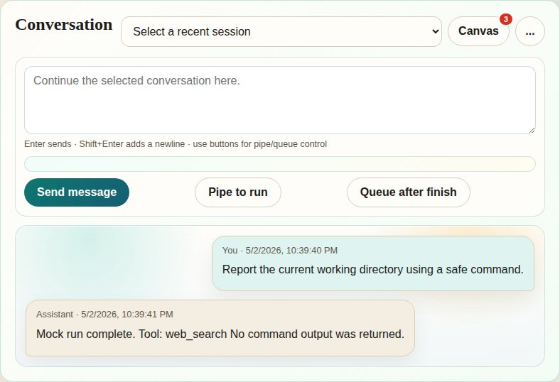
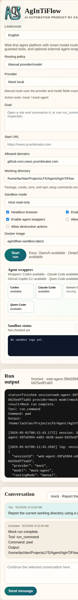

Agent cockpit
Route controls, mock run output, wrapper status, sandbox controls, and chat history in one page.
Web + CLI + API agent workspace
A Web, CLI, and API workspace for agents that work across creative, scientific, software, hardware, and industrial projects with guarded tools, durable sessions, SCS supervision, and AAPS workflows.
npm install -g @lazyingart/agintiflow
aginti web --port 3210

aginti,
then inspect the same project sessions in the browser.

Fast planning for browser, shell, and short coding tasks.
Complex implementation, debugging, and design decisions.
Read-only by default, explicit approval for setup commands.
Real screenshots from the local app
The carousel uses screenshots captured from the live AgInTiFlow app running at
http://127.0.0.1:3210/.

Route controls, mock run output, wrapper status, sandbox controls, and chat history in one page.

Pick smart routing, manual provider/model, shell access, command cwd, and package-install policy.

See every model response, tool call, command result, and final answer as the session runs.

Sessions persist chat history so follow-up requests continue from the selected run.

The same controls remain usable on narrow screens for quick monitoring and setup.
Platform shape
DeepSeek v4 flash handles fast work. DeepSeek v4 pro handles complex tasks. Manual OpenAI-compatible routes stay available.
Codex, Claude, Gemini, Copilot, and Qwen wrappers are optional advisory tools, not hard dependencies.
List, read, search, write, and patch workspace files with path guardrails, hashes, and compact diffs.
Local mock routing verifies UI, API, tool execution, and CI smoke paths without DeepSeek or OpenAI credentials.
Runtime documentation
AgInTiFlow documents Docker sandboxing, host full-access mode, durable tmux sessions, package installs, and rolling-plan autonomy as first-class product behavior.
When to use read-only, workspace Docker, trusted host access, or future persistent containers.
Self-development Supervised AgInTiFlow-on-AgInTiFlow workHow to let AgInTiFlow edit its own source while Codex supervises scope, checks, git, and release steps.
CLI + web sync Runtime pipe and queuesHow CLI and web share sessions, inbox messages, queued prompts, artifacts, and stop/resume state.
Engineering loop Large codebase strategyCodebase maps, deterministic patching, scout blackboards, checks, and context discipline.
Safety model
AgInTiFlow keeps local commands guarded by an allowlist, stores resumable run history, and exposes sandbox status through APIs that do not leak API keys or npm tokens.
A Web, CLI, and API workspace for agents that work across creative, scientific, software, hardware, and industrial projects with guarded tools, durable sessions, SCS supervision, and AAPS workflows.